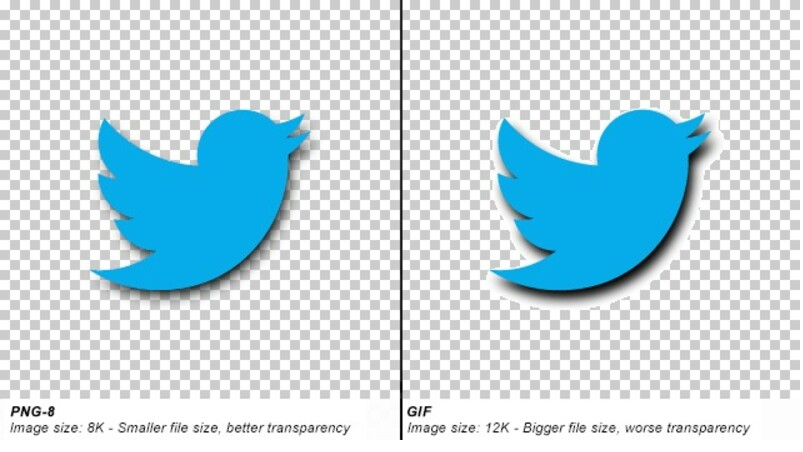

The factors that affect the file size of an image have number of colors, file compression, physical pixel dimensions and file type.
First, number of colors. Type of color have two, index color and direct color. Index color have 256 type, that type normal use on GIF format image, so image file size will small. One of them of direct color is RGB, because color of RGB is very careful, have 16777216 type of colors, so when image more clear use more color will make image size large.
Second, file compression. File compression have two type, lossy compression and lossless compression. Lossy compression at compression process will increase image size and harm image pixel. Lossless compression will remove unnecessary of data but will keep image pixel.
Third, physical pixel dimention. Physical pixel dimention means inside screen of device display point, screen of device like many bulbs in screen. Image want display on screen of device normal, need consider ratio of physical pixel dimention and css pixel.
Last, file type. Different file type, image have different size. Example GIF format, GIF format use index color, index color just less color, naturally file size will small, JPG and PNG format exactly the opposite.
No matter what one factors, will be affect the file size of an image.
PNG format uses lossless compression, has 256 levels color and support Alpha channel, but is gradually transparent, although GIF format has 256 types color, has transparency however GIF format is transparent only. Through both can transparent, but zoom in can obvious see different.
Optimize image one of the method is compression. Compression have two type, lossy compression and lossless compression, lossy compression is remove some pixel data, but lossless compression is put pixel data do compression. This methods optimise image, not only optimise image, optimise websites at the same time. When image size is small, can speed up load web page time and make download times more in short time.